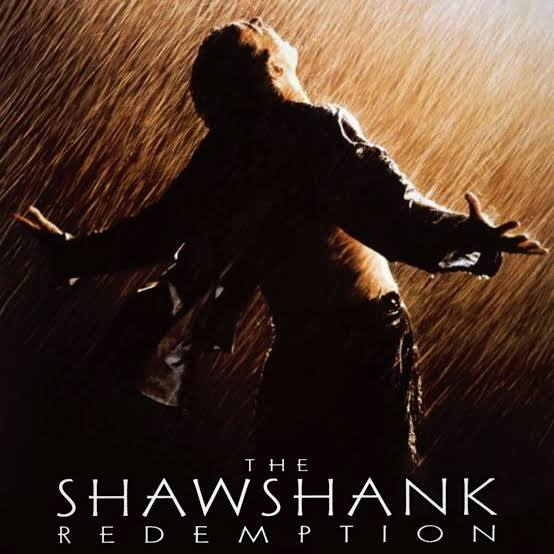
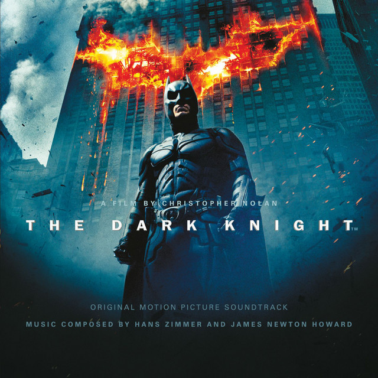
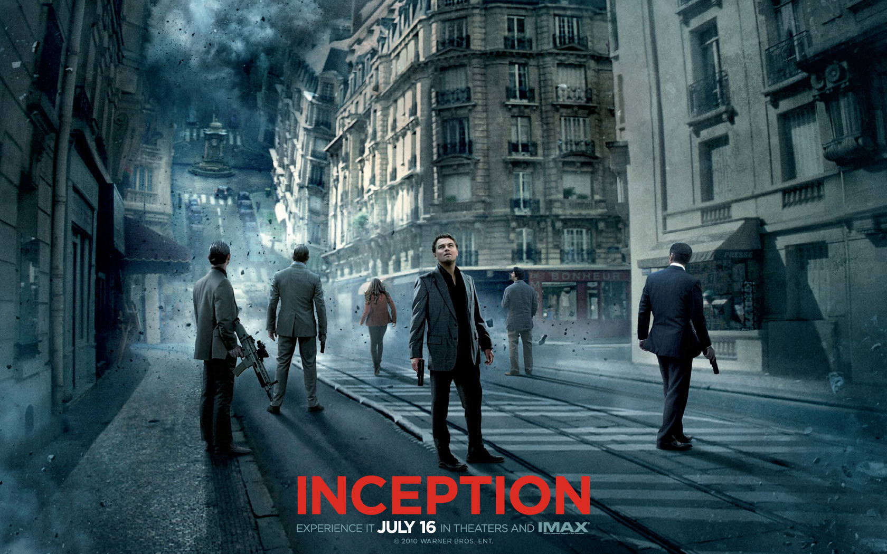

The Shawshank Redemption
The Dark Knight
Inception
Fight Club
Inglourious Basterds

>A banker convicted of uxoricide forms a friendship over a quarter century with a hardened convict, while maintaining his innocence and trying to remain hopeful through simple compassion.
| Director | Writers | Stars | Release Date | Runtime | Genre | Language | Country | Rating |
|---|---|---|---|---|---|---|---|---|
| Frank Darabont | Stephen King,Frank Darabont | Tim Robbins, Morgan Freeman, Bob Gunton | 14 October 1994 (USA) | 142 min | Drama | English | USA | 9.3/10 |

When a menace known as the Joker wreaks havoc and chaos on the people of Gotham, Batman, James Gordon and Harvey Dent must work together to put an end to the madness.
| Director | Writers | Stars | Release Date | Runtime | Genre | Language | Country | Rating |
|---|---|---|---|---|---|---|---|---|
| Christopher Nolan | Jonathan Nolan (screenplay), Christopher Nolan (screenplay), David S. Goyer (story) | Christian Bale, Heath Ledger, Aaron Eckhart | 18 July 2008 (USA) | 152 min | Action, Crime, Drama | English, Mandarin | USA, UK | 9.0/10 |

A thief who steals corporate secrets through the use of dream-sharing technology is given the inverse task of planting an idea into the mind of a C.E.O., but his tragic past may doom the project and his team to disaster.
| Director | Writers | Stars | Release Date | Runtime | Genre | Language | Country | Rating |
|---|---|---|---|---|---|---|---|---|
| Christopher Nolan | Christopher Nolan | Leonardo DiCaprio, Joseph Gordon-Levitt, Ellen Page | 16 July 2010 (USA) | 148 min | Action, Adventure, Sci-Fi | English, Japanese, French | USA, UK | 8.8/10 |

An insomniac office worker and a devil-may-care soap maker form an underground fight club that evolves into something much, much more.
| Director | Writers | Stars | Release Date | Runtime | Genre | Language | Country | Rating |
|---|---|---|---|---|---|---|---|---|
| David Fincher | Chuck Palahniuk (novel), Jim Uhls (screenplay) | Brad Pitt, Edward Norton, Meat Loaf | 15 October 1999 (USA) | 139 min | Drama | English | USA, Germany | 8.8/10 |

In Nazi-occupied France during World War II, a plan to assassinate Nazi leaders by a group of Jewish U.S. soldiers coincides with a theatre owner's vengeful plans for the same.
| Director | Writers | Stars | Release Date | Runtime | Genre | Language | Country | Rating |
|---|---|---|---|---|---|---|---|---|
| Quentin Tarantino | Quentin Tarantino | Brad Pitt, Diane Kruger, Eli Roth | 21 August 2009 (France) | 153 min | Adventure, Drama, War | English, German, French, Italian | USA, Germany | 8.3/10 |